Code 16 -- Text -- parameter structure |
P1 code number (16)
P2 staff number
P3 horizontal position
P4 vertical position
P5 character space factor
P6 horizontal size
P7 vertical size
P8 font override
P9 clockwise rotation
P10 size of space character
P11 horizontal displacement
P12 character count
P13 string length in Score steps
P15 [layer number for Color/Gray]
Jump for Type Font Information.
In order for type font selections to display properly, you must install Adobe Type Basics on your Windows machine. This is available separately.
Adjusting Letterspacing
P5 Altering P5 changes the letterspacing of the text (sometimes called Tracking by Typesetters). This is often employed in Justified text to eliminate large spaces between words. SCORE does not provide automatic kerning of letter pairs. Kerning is sometimes employed to remove space between letters when they appear in certain combinations (e.g. TA or LT). You may kern manually by creating separate text items (for each letter you wish to kern) and alter their horizontal positions. You may also kern type in another program (i.e. Illustrator or PageMaker) and import it into SCORE as a Code 15 item. P5 can adjust the space used by each character. e.g. if P5 = .9 then each character will occupy only 90% of its ordinary space. (The SIZE of the character remains the same.) The factor will hold for the entire string. Note that P5 is a relative parameter based on the size setting in P6. See also P10 regarding the size of the space character.
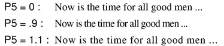
P6 and P7 control the character size. If P7 (vertical size) is left at zero it will become equal to P6.
Including (and excluding) Text in Extracted Parts
Some text (tempo indications, titles, etc.) should be included in every instrumental part when it is extracted using the PARTS feature. If you want text in every part, you must add 100 to P6. If you do not want text in any part, add 200 to P6.
***** If 100 is added to P6's size value, the part extractor feature
will put the text in all player's parts.
***** P6+200 makes all parts ignore this text.
***** P6+300 = use this text in all parts and change size to 1.
The size of the text is always dependent on the size of the staff to which the text is attached. The text size may also be set in "points." See Editing Text below.
SCORE allows you to set the size of the text in points, the standard measurement typographers use. (There are 72 points in an inch.) Select the text, then type PT n where n is a number equal to the point size you want. SCORE calculates the correct value to place in P6 based on the size of the staff this text is attached to. Note: if you change the staff size, after using the PT command, the size of the text will be altered. In this situation, you must use the PT command again to reset the size. Similarly, if you copy text from one size staff to another staff that is a different size, the text will not be the same point size. You must reuse the PT command to retain the exact same point size. To determine what point size a text string is, select the text and type PT ENTER (that is, without a number after it). SCORE displays the current point size of the text and the staff size of its staff. SCORE is unique in that you may specify any fractional pointsize from .1 point to about 10,000 point. This means that you can create text that is 1.375 points, or any other unusual size. (See also Size and Points.)
P8 can be used to override the originally given font with a different font. Use 1000-1034 to substitute PostScript fonts 0-34. For Outline P8 sets the line thickness. See below.
(See re. Preferences for other font information.)
P9 = degrees of rotation for the entire string.
P10 sets the size of the space character only. Both P10 and P5 are factors which act relative to the P6 size factor. P10 is primarily used by SCORE to justify a paragraph of text. SCORE's J command adjusts P10 automatically. It may also be used if you want to manually alter the amount of space between words.
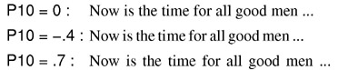
P11 is used to displace the start of the text string to the left or right. This is useful when it is desired to keep the P3 value locked on to a particular note position so that the relative position of the text will not change when notes are justified, etc. For example, suppose you wanted to shift a tempo indication to the left. If you manually adjust P3, SCORE will think the tempo indication is in the previous measure (since its P3 is less than the barline's P3), and when the parts are extracted, SCORE will position this tempo incorrectly. If instead you lock the text to the barline and alter P11 to a negative value, the text will be correctly positioned in the part.
P12 holds the character count.
P12 and P13 should never be altered.
P13 holds the string length in Score steps.
P14 If P14 is set to -1, the following two parameters are used for color printing.
See Color Control.
P15
P16
___________________________________________________________________________
ENTERING TEXT
Quick text entry: Simply type text surrounded by double quote characters ( " ). If no following parameters are added, the text will appear attached to staff 1 or the last used staff and the default position of the text will be at P3 = 100, P4 = 0. The size parameter, P6, will be zero, which is the same as size 1. If no type font is indicated, the last font used will be repeated. See below regarding fonts. A single text string may include as many as 200 characters, but very long strings should generally be avoided.
Typing "A stitch in time saves nine." will produce the following:
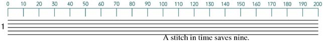
When the text appears it will be in edit mode so it may be repositioned and altered in any way desired.
If parameter values are added after the text they will determine the text's position, etc.
"A stitch in time saves nine." 3 20 14 0 2 produces:
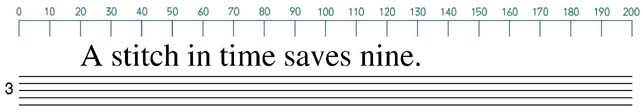
In the above example P2 = 3 (staff number), P3 = 20 (horizontal position), P4 = 14 (vertical position), P5 = 0 (default character space), and P6 = 2 (character size).
The type font may be indicated by an underbar followed by a two-digit number. In the following, _15 indicates Palatino-Italic. (See below regarding fonts.)
"_15A stitch in time saves nine." 3 20 14 0 2 produces:
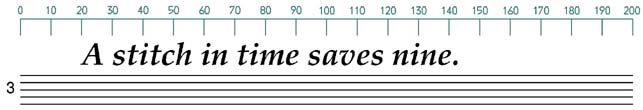
Centering text during input
If you add 1000 to P3 during input, the text will be centered on the P3 position.
"_00A stitch in time saves nine." 3 1080 13 0 1.5 produces:
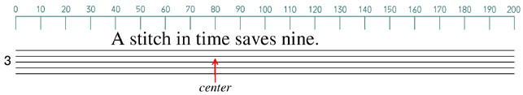
The other means of entering text are by clicking on the <New Item> box and then the <Text> box or by typing "T" followed by parameters number two up. Then the following dialog box will appear.
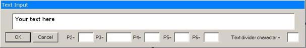
Values may be entered in the various parameter boxes. The first characters given in the text box should usually be the three-character font code, If these are not given, the previously used font will be repeated. When the text appears, it will be in edit mode so further alterations may be made. The slash character, /, is used to divide text into separate editable items. To get a printable slash, use a backslash ( \ ). When you are not in Edit Mode, you may change the divider character by typing TXD *, where * is any character to be used as the text divider.
Inputting Several Lines of Text:
To input several lines of text type "TT" instead of "T". This works the same way as above except that each time <enter> is hit the program will expect new text until the "/" character is entered.
Inputting Text from an External Source:
Typing "TTR" (followed by desired position and size parameters) allows you to enter several lines of text from an externally prepared file. Be sure to save this file with NO special formatting!
First create a box. (Code 12)
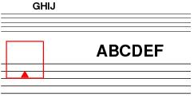
Then, while in Edit Mode, type TBX (=text box).
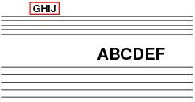
The box will center on the closest text found. If this is not where you want it, move the box closer to the desired location and type TBX.
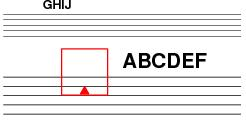
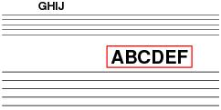
Various type fonts have different characteristics (descenders, etc.) so the dimensions of the box (P6, P7) and its position (P3, P4) may need some adjustment.
___________________________________________________________________________
EDITING TEXT
See above regarding alterations to parameters two through eleven. The text itself may be edited by typing "TX", hitting the <F7> key or clicking on the <Edit Text> box.
PT n -- This sets the type size of the text in terms of 'n' typography points. (P7 will be set to 0, hence equal to P6.) IMPORTANT: If the staff size is changed later, or if the text is moved to a staff with a different size factor, the PT n command must be used again in order to reset the desired point size.
Type PT alone to learn what the current point size is.
L,R,U,D -- The normal left-right-up-down edit letters may have a P added.
Thus, LP 20, moves text 20 points to the left, etc. There are 72 points in an inch.
Setting the Type Font.
Type fonts are set by means of three characters, an underbar followed by a two-digit number. the font may be changed at any point in the text string as demonstrated below.
Typing "_00A stitch _02in time _16saves _23nine." 3 20 14 0 2 produces:
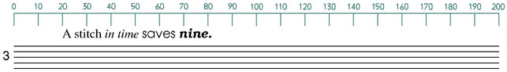
The font metrics for the following 35 PostScript fonts are built into WinScore.
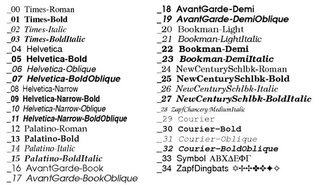
Font _94 contains the shapes traditionally used for meter numbers, plus a few other letters.
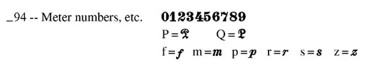
Font _99 may be used to insert PostScript language commands into an EPS file. This should used only by those familiar with the syntax of PostScript.
Another use for _99 is to put non-printing comments on a displayed page of music.
For this purpose, the first character after _99 must be the percent sign (%). The text which follows will be put into the EPS output but it will be ignored because any text in PostScript which is preceded by % is taken to be a comment.
Outline fonts are created by preceding the font number with two underbar characters. __05 produces Helvetica-Bold as outlines. The default thickness of the outline is determined by the Printer Resolution and Basic Line Width values given in the Printing Menu. The thickness can be altered by putting a number in P8. (With outline fonts, P8 should not be used for overriding the given font number.)
The outline thickness may appear somewhat different depending on printer type and resolution. It's a good idea to make test copies on the printer to be used for the final product.
Outline fonts will appear on the screen as solid green (unless some other color has been set) but they will appear as below when printed with PostScript.
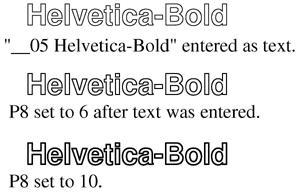
Corrections and insertions to the text may be made with the IF command. The format is as follows:
If "Old Text" THEN "New Text" a b c d
where a = lower staff number, b = left limit, c = right limit, d = top staff.
The double quotes must surround each text string.
If no numbers are typed, the text change will apply to the entire page. If the last number (d) is omitted, changes will apply to staff 'a' only. If the right limit (c) is 0 or omitted, the right limit default is 200. If only the first number (a) is given, the change will apply to that entire line.
See below for more information on type fonts.
___________________________________________________________________________
FORMATTING TEXT
Centering Text
CN s -- The leading edge of the text will conform with the P3 position of the nearest note or rest on staff s.
CT x -- The center of the text may be set to any position (x) by typing CT followed by the position number. The default position is 100. The last number given for this command will be reused if no new number is given. The following examples deal with the text string "XXXX."
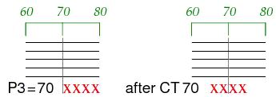
CTN s -- Centers the text on the nearest note or rest on staff s.
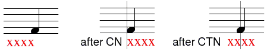
CTX s -- is the same as CTN but leading or following punctuation is ignored.
This applies the following characters -- ? ! ? ! . , : ; "
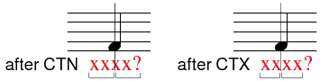
Justifying Text
J n1 n2 -- This command justifies the text between the two positions given.
If no position numbers are given, the previously given numbers will again be used. The line is justified by increasing the size of the space between each word (i.e. p10 gets changed).
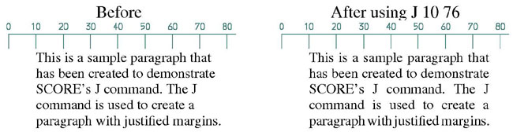
JR n -- JR = Justify Right. This sets the right end of the text string at position n.
If n is not given the previous value of n is used.
RM n1 n2 n3 -- RM = set Right Margin. With this, a total n2 lines will be adjusted so that no words extend beyond the position given as n1. The spaces between words will not be changed, but some words may be "rippled" from one line to another. If n2 is 0, or not given, this command will effect all following text lines until no line is found which is on the same staff and has the same P3 position. If n3 is not 0, it will set the vertical spacing of the lines.
RMJ n1 n2 n3 -- RMJ = set Right Margin and Justify the text between its current P3 position and position n1. The other features of this command are the same as above.
Moving Words Between Lines - RIP n
SCORE provides a RIP command (similar to the RIP command to move measures) to shift words from one line to the next. Select a line of text and type RIP n where n equals the number of words you wish to move. If you do not specify n, one word will be moved from the end of the line to the next. If there is no second line of text, RIP will create one. If n is a negative number, RIP will move a word or words from the beginning of the line to the line above or create one if necessary. If you use RIPX n, then a new text line will be created even if there is an existing line present. The RIP command requires text items to be in ascending order (see the OT command, below). Note: a "word" (at least to the RIP command) is any group of characters that is preceded and followed by a space. Bear this in mind when using RIP to insure that the correct number of words are shifted. (These commands CANNOT be given while you are still in EDIT MODE.)
Before
This sample text will have SCORE's Rip command applied to it.
After Rip 6
This sample text will have
SCORE's Rip command applied to it.
After Rip -1
This sample text will have SCORE's
Rip command applied to it.
Setting Line Spacing - LS n1 n2 n3
SCORE allows you to set the vertical space between lines in inches, centimeters, points, or scale steps. Select the first line of text in a paragraph, and type LS n1 n2 where n1 indicates the space between lines in scale steps, and n2 indicates the number of lines (if 0, all lines of text on the staff with the same P3 value, and ascending item numbers will be affected). If n2 is indicated as 1, then the lines of text may have different P3 values as long as they are in ascending item order.
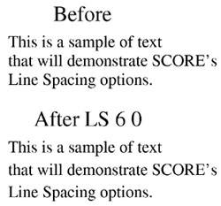
LSI, LSC, LSP These work in the same way as LS except that the "I" will set vertical spacing in inches, the "C" sets it in centimeters, and the "P" sets it in typography points. All lines altered by the use of LS will have their size factors (P6, P7) set to the values found in the original text line. The above commands can sometimes alter many different items at once. It is generally a good idea to save the work (SA) before using such commands.
To set the spacing in inches, substitute LSI for LS. To set the spacing in centimeters, use LSC.
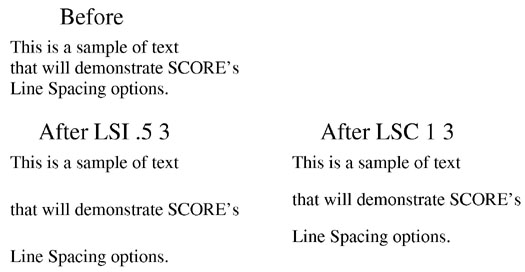
To use points, substitute the LSP command. Otherwise, these commands work identically. (72 points = 1 inch.)
Note: when you set spacing between lines of text, all of the lines will automatically have the same size setting (P6 and P7).
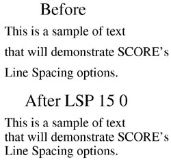
Reordering Text Items
Since many of the above commands require text items to be in their proper order (according to their item numbers) SCORE provides the OT command to reorder the text. If you are in Edit Mode, exit (press Esc). Type OT. The text items will be reordered from the highest staff on down.
Tabs
Tabs may be set within a line of text by means of the following syntax:
aaaaa ~n1~bbbb cccc ~n2~dddd eeee ~n3~.... etc.
The portion of the text string beginning with bbbb will start at the horizontal position given as n1. N2 sets the starting position of the next part of the string, etc. The given tab positions are unaffected by changes to P3. The tab positions can be changed only by means of the TX command. The tab feature may be useful when setting up various columns of text. Note: if you edit the text, and alter P3, the position of the tab remains the same. Accordingly, you must be careful not to alter the position of the text so that P3 conflicts with a tab setting.
For example,
Works~55~Composers~105~Dates
would create the following:
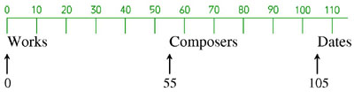
Symphony No. 3~55~Beethoven~105~1803-4 would create this below it:
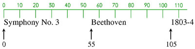
To input lyrics, use this Special Input Method. Type T and the associated parameters for the staff's lyrics, and indicate a P3 (horizontal position) of zero. This informs SCORE that you are inputting lyrics instead of regular text, and that you are not specifying their horizontal position.
Usually, you will want to specify a negative value for P4 (the vertical position); -4 or -5 is usually about right.
For example: T 1 0 -4 would create lyrics on staff 1 with a vertical (P4) position of -4. If you wish to specify the size, you must also indicate P6. This example would then read: T 1 0 -4 0 .9. This is exactly the same as the previous example, except P5 is left at its default (0), and P6 is specified as .9. Usually, you will want to leave P5 at 0 and specify a value for P6.
After typing this line, press ENTER. The text dialog box will appear. The first characters you should type are a font ID#. If no font ID# is given, SCORE defaults to the last font used. If you specify a font once during a work session, SCORE retains that Font ID# in memory and uses it until you specify another.
Let's use the font Helvetica. Type _04. Now type the first syllable of the lyric (do not type a space between the "4" and the first letter). At the end of the syllable, type a slash (/) and then type the next syllable. This is similar to typing in the Input Mode. The slash separates the text items, and tells SCORE where each individual syllable is. If you need to indicate a hyphen, do not type the hyphen on your keyboard (-). Instead, type either !! or [[ . For example, Work!!ing would create Work-ing. To create an extension line at the end of a word or syllable, type ?? or ]] . Work!!ing?? creates Work-ing_______. (Note that you do not need to type a slash (/) when using !! or ??.) For this example type:
_04This/is/how/to/in!!put/text/in/SCORE's??ly!!ric/in!!put
You can set the text division character to something other than / by bringing up the Preferences dialog and entering the new character in the TXTD box. Most characters that are not required for other purposes in this section may be used.
Above is the method as used in earlier versions of Score. This will work in WinScore, however a somewhat simpler system is now available. For the short dashes between syllables, type a single dash (-). For the extension line at the end of word, type two dashes (--). For the above example type:
_04This/is/how/to/in-put/text/in/SCORE's--ly-ric/in-put
When you have typed in all of the text, press ENTER. The text does not yet appear in the music. Instead, SCORE temporarily places a number above every note in the line and asks you which note [number] for each syllable on the line.
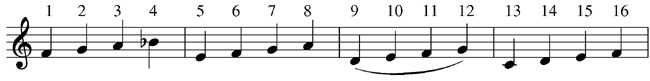
For this example you should type: 1 2 3 4 5 6 7 8 9 13 14 15 16
SCORE automatically positions the hyphens and extension lines. If every note on the line receives a syllable, you do not need to specify the note numbers. Type 99 to automatically place all of the text on the line.
The result should look like this:
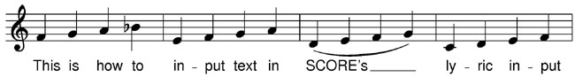
Alternatively you could type: 1:9 13
1:9 indicates all the single numbers 1 through 9. Since no numbers follow 13, all the remaining single numbers are assumed.
If you wish to move, up or down, a complete line of lyrics and dashes, type MT x y z, where
x is the staff number, y is the current P4 level, and z is the number of steps, up or down, to
be moved. The P4 entry can be a guess within two steps of the actual level.
If you enter lyrics by typing TC, each syllable will be centered on a note.
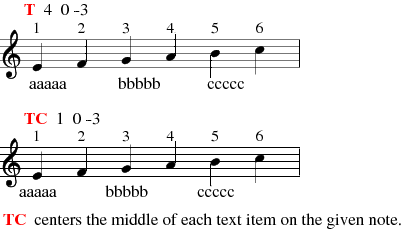
TCX is the same as TC, but some trailing or leading punctuation characters will be ignored. These include ? ! : ; ' . , ". Note the following examples:
The text input here is wow!!!wow!
(Note that !! puts short dashes between syllables.)
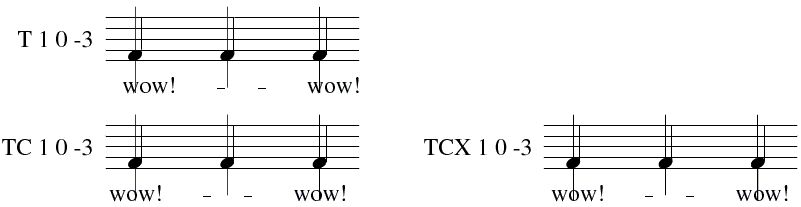
The text input here is wow???wow?
(Note that ?? puts an extended line after the syllable.)
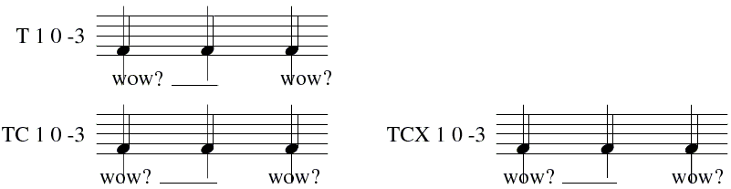
Inputting Chord Symbols
This same method may be used to input chord symbols above the staff. Use the same method to input lyrics, but specify a positive value for P4 (about 13 or 14, usually). Type in the text with slashes to separate the items, and assign the chord symbols to the proper notes.
_04Fmaj/A7/Dmin/C7/Bdim7
The final result should look like this:
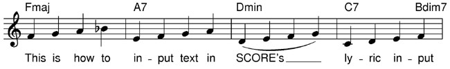
Justifying Music to the Lyrics
When performing a Lineup and Justify function on a file that contains lyrics, it may be necessary to adjust the positions of some beats to create more space for the words. Sometimes you have a long word or syllable attached to a short note value, and there is not adequate space for the text. SCORE provides a method for dealing with these problems as seen below.
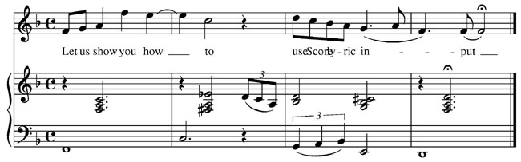
Type JT for Justify according to Text. SCORE asks you to click on any word in the line you wish to justify.
SCORE then asks for you to set the bottom and top staves of the
system containing
the text. You may type the numbers or use the mouse to indicate the staves.
(See Mouse Usage for details on drawing boxes for group editing.)
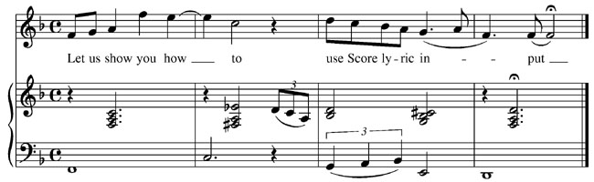
Before you use JT, it is a good idea to inspect the line and see if any syllables can be manually shifted to the left. SCORE, by default, positions syllables flush
left with the note that they apply to, and there are some situations where you may
"cheat" the syllable to the left to create more room. By doing this before you use
JT, you minimize the alterations and distortions JT may make on your file. SCORE provides a way to create this displacement using P11 (see below).
What does the JT command actually do?
When you justify a system using the JT command, SCORE searches through the text on the staff you specified and makes sure that there is a minimum amount of space between words. If there isn't, SCORE will shift the notes to the left or right respectively to make room for any long words that need additional space. The program makes minute
adjustments and only adjusts where it is necessary. Sometimes you can avoid the need to use JT if you do some minor editing on the text, shifting some words slightly to the left to create additional space.
Inputting Multiple Lines of Lyrics 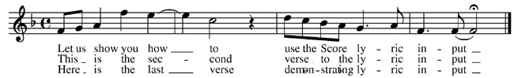
Some vocal music (songs with multiple verses, for example) require two or three
sets of lyrics below a staff. These may be input using the T command, specifying a different P4 value for each line of lyrics. Input this example:
Before inputting the text, Lineup and Justify the line. Now input the lyrics. Set P4 for the first line of lyrics at -4, the second at -8, and the third at -12. After you have input the lyrics, use the JT command to adjust the spacing on each line. Type JT and click on a word in the top line, then click on the staff lines.
Repeat the JT process, but now click on a word in the second line.
Very little adjustment was needed for the first two lines, but the bottom line needs attention. Repeat JT third time, and click on a word in the bottom line.
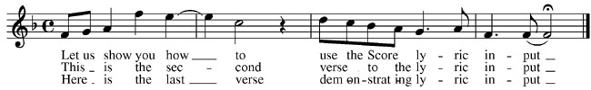
Each time SCORE has made adjustments in the horizontal spacing, trying to allow adequate space for every syllable on the line. If, after doing JT three
times, one line needs to be readjusted, use JT again. In some situations, JT must be run a few times to make the proper adjustments.
Adjusting Hyphens (Dashes)
When finished, the hyphens between the words may need adjusting. SCORE provides the CD command to do this automatically.
The CD (Center Dash) Command
Type CD n where n
indicates the staff number of the staff on which you want to center the hyphens. N may be a number greater than
256 to center hyphens on every staff. CDA
will center lyrics dashes on every staff. Often, after justifying text, the CD command should be used. The
hyphens sometimes may have been pushed too far to the right. If
this happens they should be moved to anywhere between the syllables before using CD.
CD may also be used on a single item. Select the hyphen and type CD. The hyphen is correctly centered between the syllables. Here is the above example after using CD:
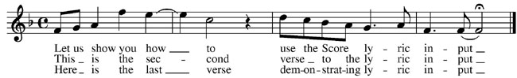
If the text remains too crowded, it may be necessary to reduce the size of the text or reduce the staff size.
More font information.
Jump for Complete List of Basic Type Fonts.
Inputting Special Text Characters
SCORE allows you input a wide variety of diacritical accents and marks, as well as many special symbols. You may also input some of the music characters in a line of text. Following is an example of a standard PostScript character set.
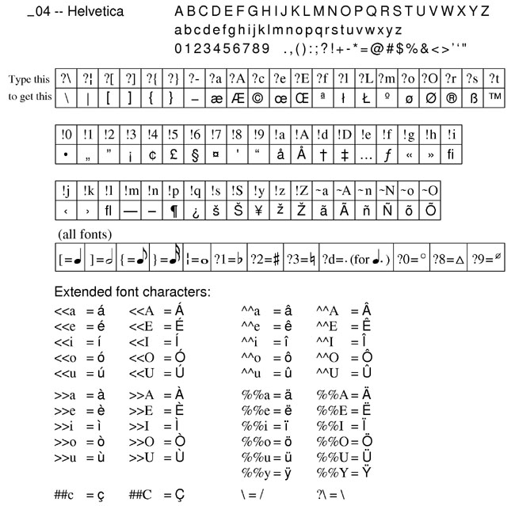
SCORE does not display all of these characters on the screen. Some characters will only appear as an "X." But when the page is printed, the correct character will print with the proper spacing. This is because SCORE does not have a Screen Font for every character that is available for printing.
Extended Font Characters and Octal Codes
SCORE does not display all of these characters on the screen. Some characters will only appear as an "X." But when the page is printed, the correct character will print. This is because SCORE does not have a Screen Font for every character that is available. Octal codes are always entered as five characters, two backslashes and a three-digit number.
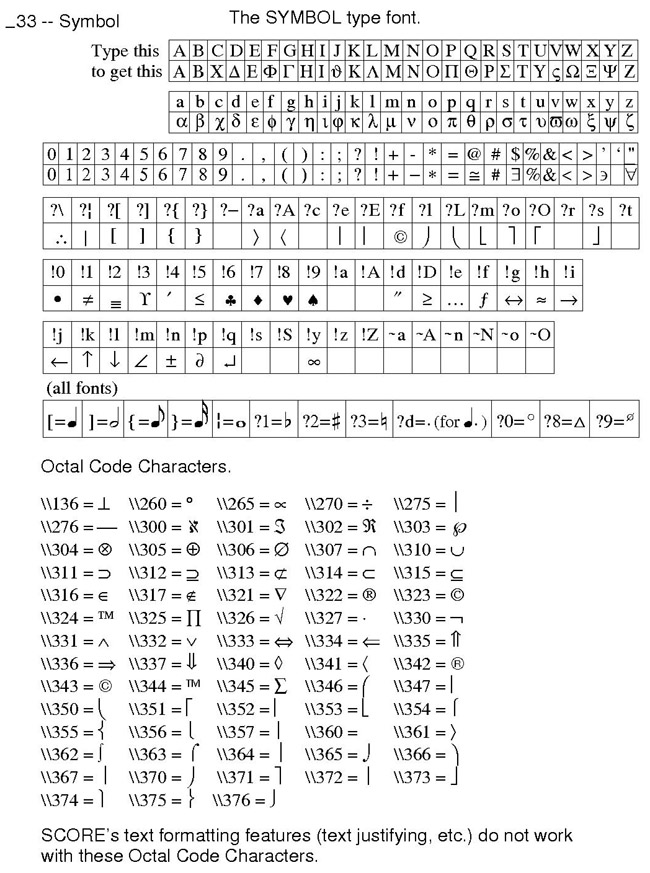
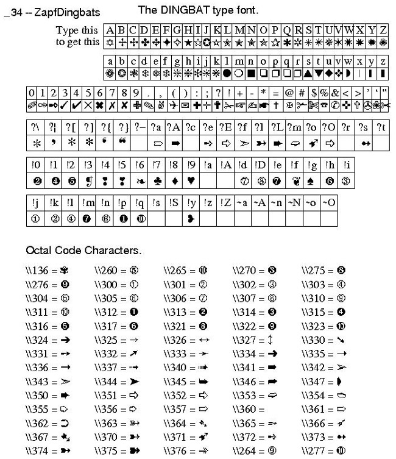
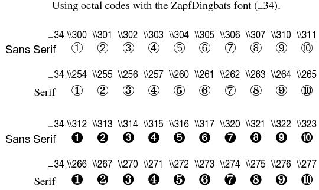
_____________________________________________________________________
Function Key Setup for Code 16
F1
HelpF2
Back to
Previous ItemF3
Forward to
Next ItemF4
Back to
Previous Item,
Same Code #F5
Forward to
Next Item,
Same Code #F6
. . .
F7
Edit the text
(TX)F8
CenterF9
Exit from
Edit Mode
( X )F10
. . .F11
Delete, Move
to Previous,
Same Code #F12
Delete, Move
to Next,
Same Code #